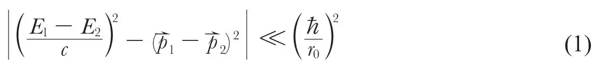

英文
英文巴巴
编者按
1939年，物理学家认识到，讨论电子和质子等粒子行为的理论框架在某种意义上是不够完善的，尤其是对于一种叫介子的粒子，它的质量介于电子和质子之间而且携带电荷。霍米·巴巴是剑桥大学和布里斯托尔大学的印度籍研究生。他也是第一批对介子具有的更广泛含义进行认真思考的学者之一。20世纪60年代巴巴回到印度并成为印度原子能委员会的主席。1966年他在一次空难中不幸去世。 英文
众所周知，介子矢量理论[1]包含介子与质子和中子相互作用的基本长度，它是由介子质量出现在一些相互作用项的分母中的事实所决定的。这种情况使得在一些动量变化大于mc（m为介子质量）的基本过程中相互作用变得非常大，从而导致了海森堡爆炸，同时也使一些二阶效应与辐射理论所得结果相比更加发散。这使海特勒[2]和其他一些人注意到介子理论的现有形式因给出介子能量大于mc2而是完全错误的，海森堡[3]也指出，量子力学仅可以完美地解决那些满足瓦塔金条件[4]的基本过程，该条件如下：

式中E和p在这个过程中分别代表一个粒子初态和终态的能量和动量，r0为与ћ/mc具有同样量级的基本长度。我这篇短文的目的是要引出一个论点，首先该论点指出量子力学的应用范围如果真的仅限于条件（1）满足的情况，那么就不可能出现介子理论所预言的爆炸现象；其次，我对条件（1）本身作为量子力学正确性的限制条件表示质疑。 英文
这个论点具体如下：为了简单起见，我们考虑不带电荷的介子[5]的情况，因为带电情况的变化对这个论题没有本质上的影响，另外我们还用到A（49）式[1]中给出的哈密顿量。在适当的洛伦兹框架下，当介子动量的变化大到可以和mc相比拟时，表示相互作用的（58a）式中的一些项就会变得非常大。即使在质子运动可能被认为是非相对论性的极限情况下，这些可引发爆炸的项也是一样由横向介子波和纵向介子波引起的。此外，爆炸开始出现时的临界动量在mc变小时也会变小，当mc趋于0时，临界动量会变得几乎为0。 英文
另一方面，由哈密顿量（A（14）和（15），并在中性介子的假设下作适当简化）导出的严格介子场量子化运动方程，即：

在m趋于0时会连续地过渡到麦克斯韦方程。但是根据电动力学，我们知道正如所谓的“红外灾难”，虽然发射大量量子的概率要大于发射单个量子的概率，但这决不会限制量子力学的适用范围，也不会干预应用微扰理论计算小概率的过程。而且正是那些可以用经典方法计算的过程有可能发射大量量子。 英文
我们可以由此得出结论，取决于相互作用项中介子质量的基本长度绝不可能对量子力学的精确性有所限制。举例来讲，当两个能量大到足以和mc2相比拟的质子发生碰撞的时候，同时发射大量介子的可能性就会变大，这类似于与具有有限静止质量的量子相关的“红外灾难”，因此量子力学仍然可以解决这类问题。同样我们可以指出，用经典方法处理介子场量能够精确地计算出大爆炸的结果，也就是说，既然介子满足爱因斯坦–玻色统计，那么当我们处理包括大量介子的问题时，对于非量子化的场量，介子场就变成了一个经典场。 英文
因此，如果基本长度r0的出现使现有的量子力学理论只能应用于满足式（1）的情况，那么这个长度r0就与介子质量或爆炸的出现无关。量子力学的现有形式不可能是严格正确的，因为它在涉及点电荷自能问题时会产生发散的结果；但是，这种局限性可能是由于正确的经典点电荷方程没有量子化，而不是因为引入了基本长度r0。最近只有狄拉克[6]给出了这些方程，不过尚未得到这些方程的量子化形式。 英文
因此，我们可以预测快速运动的质子（或中子）会引发爆炸，放出动量大约为mc的介子，而当介子能量远大于质子的静止能量时则不可能引发爆炸，而且能量越大，质子对介子的散射越弱，这与康普顿效应类似。 英文
这表明，由经典运动的质子或中子的世界线所决定的经典的推迟介子场和势能可以写成两部分之和。第一部分的具体形式为一个点电荷和点偶极子（用一个六维矢量描述）沿经典的世界线运动所对应的电磁场量，而不包含介子质量。第二部分在包括质子世界线在内的任何空间点上都不会出现奇异点，而且当介子质量m趋于0时它也变为0。因此，介子的奇异点与电磁场的奇异点是一样的，可以参照狄拉克[6]对点电荷电磁场的处理方法以同样的方式、在同一程度上消除这些奇异点。 英文
详细的计算结果将发表在其他地方。 英文
（胡雪兰 翻译；厉光烈 审稿）
* “mesotron”是安德森和尼德–迈耶（《自然》，142，874；1938）为在宇宙线中发现的新粒子所取的名字，该粒子的质量介于电子和质子之间。大家感觉“tr”在这个单词中是多余的，因为它并不属于前面表示“中间”的意思的希腊词根“meso”，而中子和电子中的“tr”是属于词根“neutr”和“electra”的，在这种情况下最好接受玻尔的建议，即用电子表示与所带电荷正负无关的带电粒子，而用负电子和正电子来区分所带电荷的正负号。因此把这种新粒子命名为“meson”比将其称为“mesotron”更符合逻辑、也更简洁。